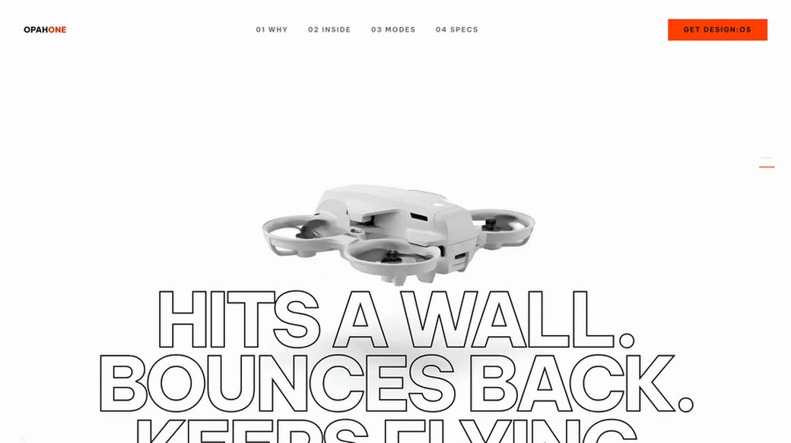
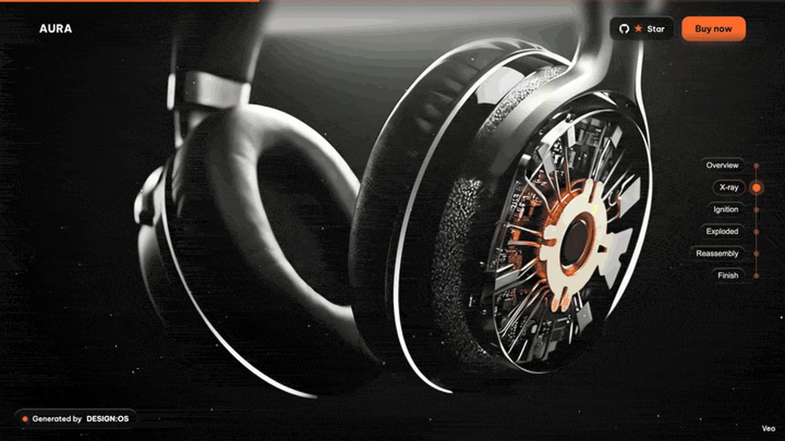
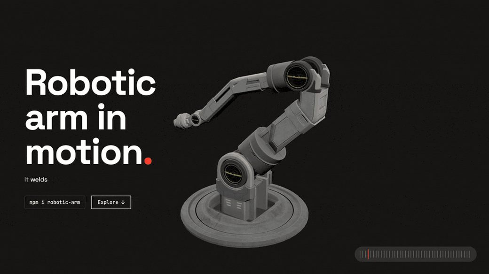
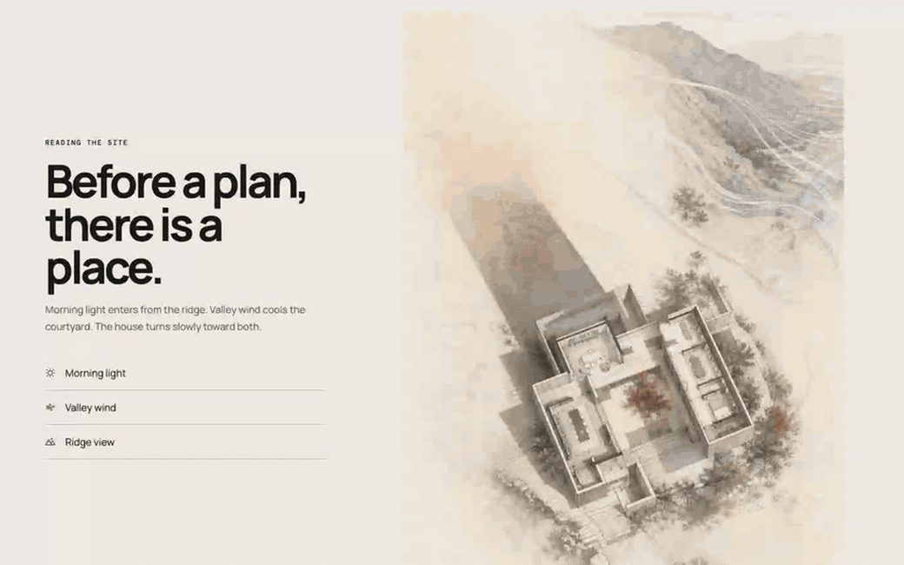

design:os · design CLI · npm ease-design
Describe the interface in plain words. Get production-grade UI back, gated by code.
A multi-runtime design CLI you drive from Claude Code, Codex CLI or Antigravity with /ui:* commands. One design system; web, Figma and Apple-native execution. The deterministic ui kernel routes, validates contracts and refuses unqualified claims; it never calls a model.


What it is
- Install
npm i -g ease-designtheuibinary, zero runtime deps- Kernel
- 47 commandsdeterministic, network-free, no model calls
- Tests
- 3,955 kernel testsplus deterministic static and rendered gates
- Surfaces
- Web · Figma · SwiftUImacOS, iOS, iPadOS marked provisional
- Agents
- Claude Code · Codex · Antigravity
ui init --runtime <name> - License
- MITNode ≥ 20
Why this, compared with a DESIGN.md file, an IDE design agent or a hosted builder
What DESIGN:OS does that the alternatives do not, or do differently. Every claim below is stated in the README with its evidence.
The floor is code
Deterministic linters run on every delivery; a blocking breach cannot receive a QUALIFIED verdict. Prose guidance a model can talk itself past; a linter it cannot.
One system, three runtimes
The same design system compiles to production HTML, idiomatic Figma through the Figma hand, and SwiftUI-first native routes.
Model-free kernel
Routing, contract validation and claim boundaries are deterministic and network-free. Your agent writes the code; the kernel decides whether it qualifies. No API keys.
Brownfield first
/ui:learn compiles the design system from your own code, URL or Figma file instead of a persona default. /ui:why answers with provenance from the design memory.
Measured, with the misses published
A controlled three-way study: orchestration beat raw prompting by a 1.77-point mean lift in blind review; nine repeat runs scored 8.96 / 10. The same study found two mobile overflow failures, and says so.
A designer and an agent in one Figma file
The separate plugin gives a free write path on Figma Free with one undo step per mutation and a verified 1:1 mirror. Its own page.
Where the alternatives win, stated plainly: a DESIGN.md corpus or Claude Design scaffolds a first screen faster with no install; an IDE canvas agent gives a visual editing surface this CLI does not; hosted builders deploy for you. Still open here: Qualified Delivery calibration, the ≥ 7 taste threshold tuned only by reasoning, and native arms at provisional assurance. Status and honest boundaries.
The machine floor
Every standard ships an emitter and a linter in the same commit. Each run reports what it could not do as loudly as what it found.
ui taste-lint · 34
The generated-UI tells: transition: all, layout keyframes, missing reduced-motion, overshoot easing, italic display headings, the violet gradient.
ui tell-lint · 43
Design tells in any language: the side-tab accent, the stock purple palette, nested cards, a kicker above every heading, a pulsing dot that reports nothing.
ui validate-layout · 20
Structural and overflow safety: unclosed tags, fixed-width overflow, 100vw traps, root overflow-x: hidden breaking sticky.
ui content-lint · 12
Honest copy: placeholder Latin, placeholder names, click-here links, all-caps shouting, typewriter quotes.
ui a11y-lint · ds a11y
Tier-1 static WCAG checks and token-pair contrast at AA, hover and active included. It never says “compliant”; it says exactly what it checked.
a11y-audit · page-shot · ui vr
The rendered tier: axe-core over live Chrome, deterministic PNG renders, pixel-level visual-regression gates per component.
Install once
npm install -g ease-design # installs the ui kernel (zero runtime deps)
ui doctor # verify the install is healthyWire it into the project you want to design for, then open your agent CLI in that project.
cd ~/code/your-app
ui init --runtime claude # or: --runtime codex | --runtime antigravity/ui:generate a pricing page for a developer-tools SaaS, 3 tiers, dark themeThat is the whole loop: describe, activate, compile, qualify. Have an existing app? Run /ui:learn first so the design system is compiled from your product’s own evidence. The full studio (recall, rendered a11y, the Figma hand) is git clone plus ./setup.sh, Node ≥ 22.
Six daily verbs
/ui:generate
Weak intent compiled into a typed brief and generation contract; one candidate rendered, repaired and delivered by qualification status.
/ui:learn
Brownfield onboarding: compile the design system from your project’s own evidence.
/ui:iterate · /ui:refine
Tweak in plain words; surgical line-diffs, re-scored; the hash-seal on the design system stays intact.
/ui:from-url
Extract a live site’s design system into a portable folder: spec, tokens, audit.
/ui:to-figma
Author idiomatic Figma on the canvas: auto-layout, real instances, token-bound variables.
/ui:why
Ask why a past design decision was made; the answer carries provenance from the design memory.
Generated by DESIGN:OS
Public sites shipped end to end with this toolchain; each repository documents how to reproduce it. Posters are the first frame of each recording; the live sites are one click away.
- OPAH ONE

343 WebP frames in two tiers, accent derived from the footage, five declared lint gates green.
live site - AURA

One scroll value scrubs a 289-frame exploded-view film under the Liquid Glass persona.
live site - Robotic Arm

A Three.js arm assembles from wireframe and explodes into a labelled blueprint on one scroll value.
live site - Rill Architecture

Image-led spatial narrative under GSAP parallax: hero, site analysis, a sticky lived sequence.
live site
Diagram and chart gallery, built from the repository’s own examples
FAQ
Does the kernel call a model or need an API key?
No. The deterministic ui kernel handles routing, contract validation and the fail-closed claim boundary; your own agent CLI writes the implementation. No API keys, no phone-home.
Which agent CLIs does it work with?
Claude Code, Codex CLI and Antigravity, through plain-language /ui:* commands installed by ui init --runtime
What does it output?
Production HTML for web surfaces, idiomatic Figma through the opt-in Figma hand, and SwiftUI-first native macOS, iOS and iPadOS routes marked provisional.
What does “provisional” mean for the native arms?
The arm can route and produce work today, while live accessibility, device evidence and owner acceptance remain separate qualification gates. It is stated, not hidden.
Where is the Figma plugin?
In its own repository, design-os-figma-plugin: the plugin, the figma-agent CLI and the 1:1 mirror, versioned and released separately.
How is it different from a DESIGN.md file or a hosted UI builder?
The floor is code: deterministic linters run on every delivery and a blocking breach cannot receive a QUALIFIED verdict. A prose design file cannot refuse output; this can.